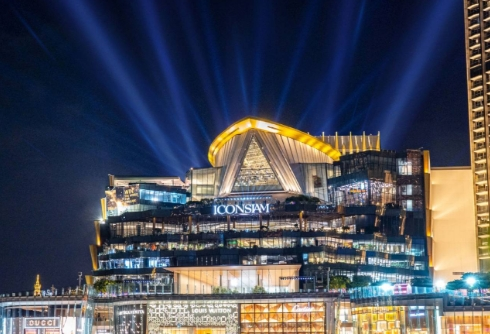
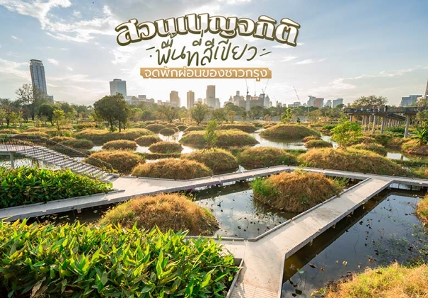
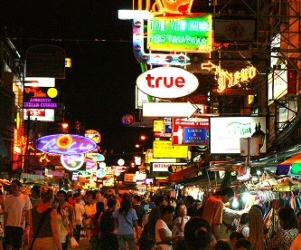
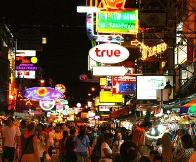
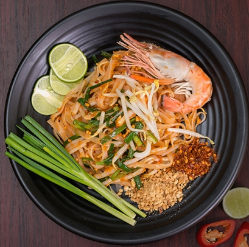
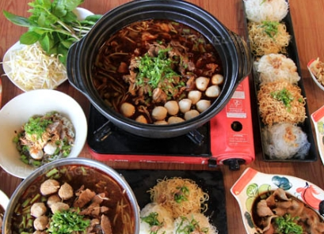
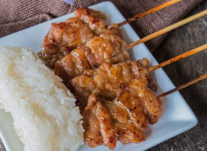
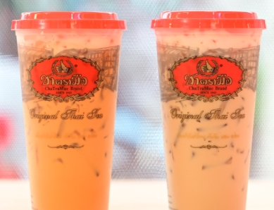
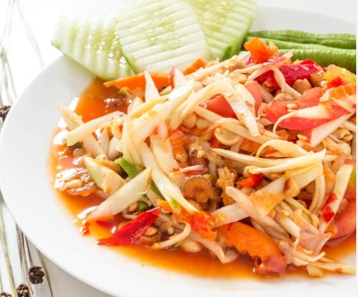
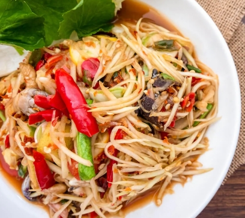

พาเที่ยวกรุงเทพฯ แบบสายคอนเทนต์ ค้นพบเสน่ห์กรุงเทพฯ เมืองแห่งแสงสี
หลังจากที่เราไปเที่ยววัดกันจนอิ่มบุญแล้ว ตกดึกเรามาอิ่มท้องกันต่อ เพราะกรุงเทพไม่ได้มีแค่วัดที่ขึ้นชื่ออย่างเดียว อาหาร ที่เมืองของเราก็ขึ้นชื่อว่ามีความหลากหลาย และมีรสชาติที่อร่อยไม่เหมือนใครเช่นกัน!! ขอบอกเลยว่าไม่ว่าจะเป็นกลางวันหรือกลางคืนเมืองกรุงเทพของเรามีที่เที่ยวให้แบบครบครันกันเลยทีเดียว
 ดึกแล้วไปไหน 📍พิกัดสถานที่เที่ยวกรุงเทพยามค่ำคืน Click it now!!!
ดึกแล้วไปไหน 📍พิกัดสถานที่เที่ยวกรุงเทพยามค่ำคืน Click it now!!!
กรุงเทพฯ คือสวรรค์ของนักกินและนักช้อป!🛍️🏬 คุณสามารถลิ้มลองอาหารตั้งแต่ร้านริมทางราคาย่อมเยาไปจนถึงร้านระดับ Michelin Star เดินซื้อของจากตลาดท้องถิ่น จนถึงห้างสุดหรูอย่าง ICONSIAM หรือ Siam Paragon ที่นี่มีครบทั้งแฟชั่น ของฝาก และของแปลกที่หาที่ไหนไม่ได้
-
🛍️ สถานที่ช้อปปิ้ง & ไลฟ์สไตล์
- ไอคอนสยาม (ICONSIAM) หรูหรา ติดแม่น้ำเจ้าพระยา มี SookSiam แหล่งรวมอาหารทั่วไทย
- สยามพารากอน / สยามเซ็นเตอร์ / สยามดิสคัฟเวอรี่ ศูนย์การค้าสำคัญของวัยรุ่น ติด BTS สยาม
- เอ็มบีเค เซ็นเตอร์ (MBK) ของฝาก ของอิเล็กทรอนิกส์ ของวัยรุ่น ราคาประหยัด
- ตลาดนัดจตุจักร (JJ) ตลาดนัดกลางแจ้งใหญ่ที่สุดในไทย เปิดเสาร์-อาทิตย์
- ตลาดนัดช่างชุ่ย ตลาดนัดที่มีของวินเทจ เเละร้านอาหารที่หลากหลาย
แม้กรุงเทพฯ จะเต็มไปด้วยความเร่งรีบ แต่ก็มีมุมสงบให้พักใจ เช่น สวนลุมพินี สวนเบญจกิติ หรือคาเฟ่ริมแม่น้ำเจ้าพระยา การเดินเล่นย่านเก่าวังหลัง ท่าพระจันทร์ หรือปั่นจักรยานไปเกาะเกร็ด ก็เป็นอีกไลฟ์สไตล์ของคนเมืองที่น่าสนใจไม่น้อย🌳
-
🌳 สถานที่พักผ่อนธรรมชาติ
- สวนลุมพินี สวนสาธารณะแรกของกรุงเทพฯ เหมาะกับวิ่ง พายเรือ
- สวนเบญจกิติ จุดถ่ายรูปกับสระน้ำใหญ่ เห็นวิวตึกสวยมาก
- เกาะเกร็ด (นนทบุรี ใกล้กรุงเทพฯ) บรรยากาศแบบชุมชนริมน้ำ มีงานหัตถกรรมและมีร้านบ้านๆอาหารอร่อยให้เลือกทาน
ถ้าคุณกำลังมองหาความสนุก ความอร่อย และประสบการณ์ใหม่ๆ กรุงเทพฯ คือจุดหมายที่ไม่ควรพลาด เมืองนี้พร้อมต้อนรับคุณด้วยแสงสีในยามค่ำคืน ศิลปะร่วมสมัย คาเฟ่เท่ๆ อาหาร Street Food ที่ติดอันดับโลก และแหล่งชอปปิ้งที่ครบทุกสไตล์ ไม่ว่าคุณจะเที่ยวแนวไหน…กรุงเทพฯ มีให้หมด!
-
จุดเช็คอินวัยรุ่น / คาเฟ่📷🎨
- เอเชียทีค (Asiatique) ริมแม่น้ำ มีชิงช้าสวรรค์ใหญ่ 🎡
- มหานคร สกายวอล์ค จุดชมวิวกระจกใส บนตึกสูงที่สุดในไทย
- คาเฟ่ย่านอารีย์ / ทองหล่อ / เอกมัย ร้านสไตล์มินิมอล คนชอบไปถ่ายรูปลง IG
เพียงก้าวแรกที่คุณเดินเข้ามาในกรุงเทพฯ เมืองนี้จะพาคุณเข้าสู่โลกที่เต็มไปด้วยรสชาติ ความคึกคัก และเรื่องราวใหม่ๆ ทั้งตลาดกลางคืนที่มีชีวิตชีวา คาเฟ่ซ่อนตัวอยู่ตามตรอกเล็กๆ และอาหารริมทางที่อาจกลายเป็นเมนูโปรดของคุณที่นี่ เมืองที่ไม่เคยหลับ…และไม่เคยหยุดสร้างความประทับใจ💖💖
-
แหล่งท่องเที่ยวยามค่ำคืน🌆
- ถนนข้าวสาร Backpacker จากทั่วโลก ร้านบาร์ ร้านอาหาร
- เจริญกรุง เจริญนคร ย่านคาเฟ่และแกลเลอรีศิลปะมีงานจัดแสดงหลากหลาย
- ไชน่าทาวด์ เยาวราช Street food เปิดกลางคืน ร้านดังเยอะมากๆ
 พิกัดคาเฟ่ ย่านเจริญกรุง สายคอนเทนต์ห้ามพลาด Click it now!!!

ไปถนนข้าวสาร เที่ยวที่ไหนดี ทำอะไรดี Click it now!!!
พิกัดคาเฟ่ ย่านเจริญกรุง สายคอนเทนต์ห้ามพลาด Click it now!!!

ไปถนนข้าวสาร เที่ยวที่ไหนดี ทำอะไรดี Click it now!!!
กรุงเทพมหานครเป็นเมืองแห่งความหลากหลาย🏙️ ทั้งเชื้อชาติ วัฒนธรรม อาหาร และไลฟ์สไตล์ นักท่องเที่ยวสามารถเดินจากวัดเก่าแก่ ไปห้างระดับโลกเพียงไม่กี่นาที หรือเปลี่ยนจากการกินอาหารริมทางไปจิบกาแฟในคาเฟ่สไตล์มินิมอลได้ภายในวันเดียว เมืองนี้เต็มไปด้วยสีสันและเอกลักษณ์ที่ไม่เหมือนเมืองไหนในโลก
เที่ยวกรุงเทพฯ ให้สุด แล้วหยุดที่คาเฟ่! กรุงเทพฯ เมืองที่เต็มไปด้วยเรื่องราวดีๆอาหารแนะนำเมื่อมาเที่ยวกรุงเทพ
-
ผัดไทย

- เมนูเส้นผัดกับซอสหวานเค็มกลมกล่อม ใส่ไข่ เต้าหู้ กุ้งแห้ง โรยถั่วลิสง บีบมะนาวสด ๆ กินคู่กับงอก อร่อยครบทั้งหวาน เปรี้ยว เค็ม รับรองติดใจตั้งคำแรก! ต้มยำกุ้ง
- ซุปเผ็ดเปรี้ยวหอมสมุนไพรไทยอย่างตะไคร้ ใบมะกรูด พริก และน้ำมะนาว ใส่กุ้งตัวโต รสจัดจ้านถึงเครื่อง เป็นเมนูที่ทั่วโลกรู้จักและต้องลองให้ได้เมื่อมาไทย ก๋วยเตี๋ยวเรือ 
- เส้นก๋วยเตี๋ยวในน้ำซุปเข้มข้นหอมเครื่องเทศ อาจใส่เนื้อ หมู ลูกชิ้น เสิร์ฟชามเล็กแบบโบราณ เหมาะกับการสั่งหลายชามกินต่อกัน ฟีล "ชามเดียวไม่เคยพอ!" หมูปิ้ง + ข้าวเหนียว 
- หมูหมักเผ็ดหวานย่างจนหอม เสิร์ฟกับข้าวเหนียวร้อน ๆ เมนูสตรีทฟู้ดสุดฮิต กินง่าย อิ่มเร็ว เหมาะมากตอนเช้าหรือเป็นของว่าง ชาไทย / นมเย็น 
- ชาไทยสีส้มเข้ม รสหวานมันกลมกล่อม ดื่มกับน้ำแข็งเย็นชื่นใจ หรือ “นมเย็น” สีชมพูหอมหวานแนววัยเด็ก เป็นเครื่องดื่มที่ใครๆ ก็หลงรัก ส้มตำไทย ส้มตำปูปลาร้า  
- ยำมะละกอสับสด คลุกกับน้ำปลา น้ำมะนาว พริก ถั่วลิสง ปรุงรสเผ็ดเปรี้ยวหวานแบบ “ส้มตำไทย” หรือถ้าชอบความแซ่บแบบอีสานแท้ ต้อง “ส้มตำปูปลาร้า” กลิ่นจัดจ้านถึงใจ คนท้องถิ่นนิยมมาก! ใครที่เป็นสายกินแซ่บบอกเลยเมนูนี้ต้องลอง

กรุงเทพเป็นเมืองที่เดินทางสะดวก ด้วยระบบรถไฟฟ้า BTS และ MRT ที่ครอบคลุมหลายพื้นที่ รวมถึงบริการเรือ แม่น้ำเจ้าพระยา รถเมล์ และแอพเรียกรถเช่น Grab หรือ Bolt ทำให้นักท่องเที่ยวสามารถเดินทางได้ง่ายและประหยัดเวลา
-
แนะนำการเดินทางภายในกรุงเทพ
- BTS (รถไฟฟ้า): เดินทางรวดเร็ว ไม่ติดรถติด🚉
- MRT (รถไฟใต้ดิน): สะดวกสำหรับไปย่านธุรกิจ🚇
- เรือด่วนเจ้าพระยา: เดินทางริมแม่น้ำ เหมาะกับการเที่ยวชมวิว🛥️
- รถเมล์: ค่าโดยสารถูก แต่บางครั้งการเดินทางจะช้าไปบ้าง🚗
- แท็กซี่ / แกร็บ: สะดวก แต่ควรหลีกเลี่ยงช่วงรถติด🚕